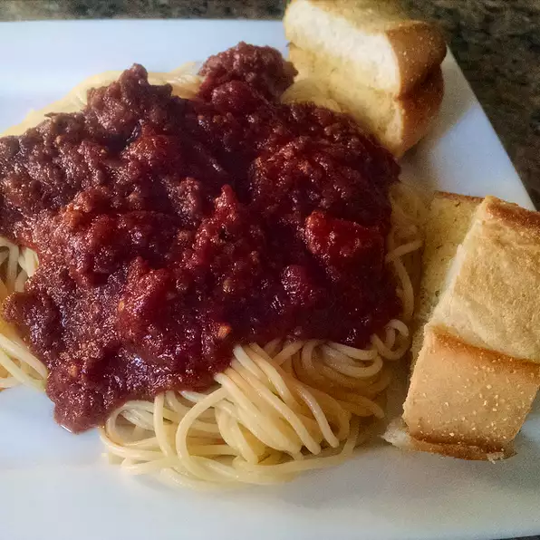

Wedding gift spaghetti sauce

This recipe was given to me as part of a wedding gift recipe collection from a very dear friend. I
t is rich, aromatic, flavorful and makes A LOT. So please grab the biggest pot you can find. I mean REALLY
BIG. Extra sauce freezes well for future pasta dishes.
Ingredients
1 pound mild sausage/ul>
4 teaspoons Italian seasoning
2 teaspoons salt (Optional)
2 teaspoons dried rosemary
1½ teaspoons dried oregano
½ teaspoon ground black pepper
¼ teaspoon cayenne pepper
1 (29 ounce) can tomato puree
3 (6 ounce) cans tomato paste
Steps
- Heat butter and olive oil together with onion and garlic in a large pot over medium heat; cook and stir
ground beef and sausage in the onion mixture until browned and crumbly, 10 to 15 minutes. Stir Italian
seasoning, salt, rosemary, oregano, and black pepper into ground beef-sausage mixture; simmer for 20 minutes.
- Pour water, tomato puree, and tomato paste into ground beef-sausage mixture; simmer, stirring occasionally,
over low heat until flavors have combined, at least 2 hours.